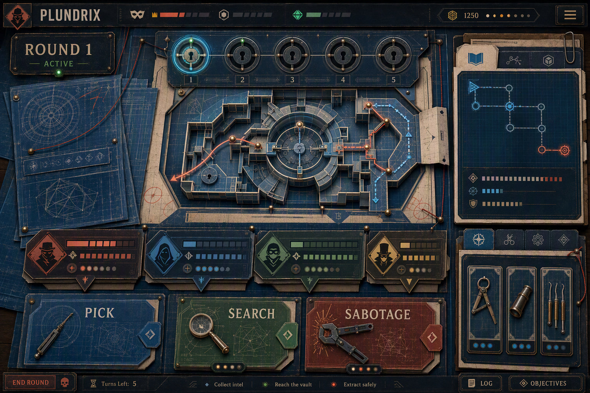

Recommended synthesis
Blueprint brain, punchcard hands, comic grin.

60% Impossible Blueprint
25% Punchcard Caper
15% Cut-Paper Caper
Use the Blueprint system for layout, routes, and persistent state. Borrow Punchcard's physical buttons, counters, and warm contrast for primary interactions. Reserve Cut-Paper for rivals, sabotage, reveals, celebrations, and marketing moments. Use Brass Dossier selectively for vault closeups, rare gadgets, and rewards.
- Make the vault a persistent visual machine, not a row of circles.
- Give Pick, Search, and Sabotage distinct shapes, color identities, and motion signatures.
- Let depth communicate hierarchy: work surface, state layer, active control, dramatic overlay.
- Keep normal body copy on calm, high-contrast planes; concentrate texture at edges and focal objects.
- Build the effect with reusable CSS layers and a small asset kit so one person can maintain it.